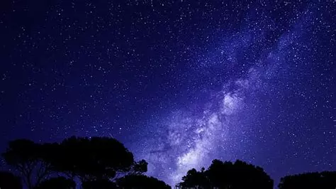

This is an image of the night sky visible without light pollution. This file is a .webp image, which are great for webpages as they are small and save on bandwidth. I chose this image because I love night time and wish I could see the sky this clearly all the time.